# hide
import os
import sys
import scipy.io
import scipy.misc
import matplotlib.pyplot as plt
from matplotlib.pyplot import imshow
from PIL import Image
import PIL.Image
#from nst_utils import *
import numpy as np
import tensorflow as tf
import pprint
%matplotlib inline
from IPython import display
import imageioNeural Style Transfer, ConvNet(VGG19), Transfer Learning, tf-gpu
- toc: true
- branch: master
- badges: true
- comments: true
- author: Jaekang Lee
- categories: [fastpages, jupyter,meme]
.jpg)
.jpg)
.jpg) 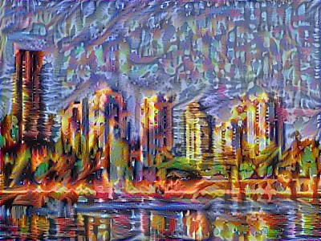
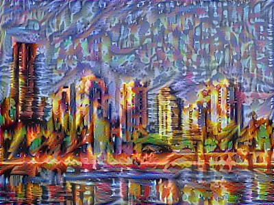
.jpg)
.jpg)
.jpg)
.jpg)
.jpg)
Styles used
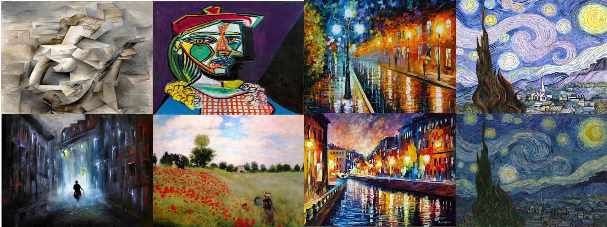 I think you can guess which styles were used on which photos. Except Newbie’s style is by Wassily Kandinsky — Composition VII
How it works
Neural Style Transfer works by choosing a content image and a style image and then ‘drawing’ the content image using style of the style image.
In implementation, all we are doing is calculating some derivatives to make a number small as possible.
This is the cost function we are trying to minimize. As \(J(GeneratedImage)\) gets smaller, we get the art we want. Think of cost function as distance from our art being beautiful. G is initialized as a random noise image. We will use Adam optimization to compute the gradient. Think of gradient as small step towards prettiness.
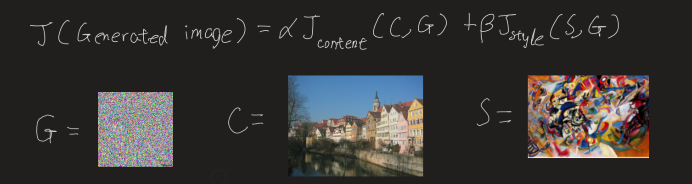
So every iteration, G will be subtracted with gradient of \(J(GeneratedImage)\) slowly becoming beautiful.
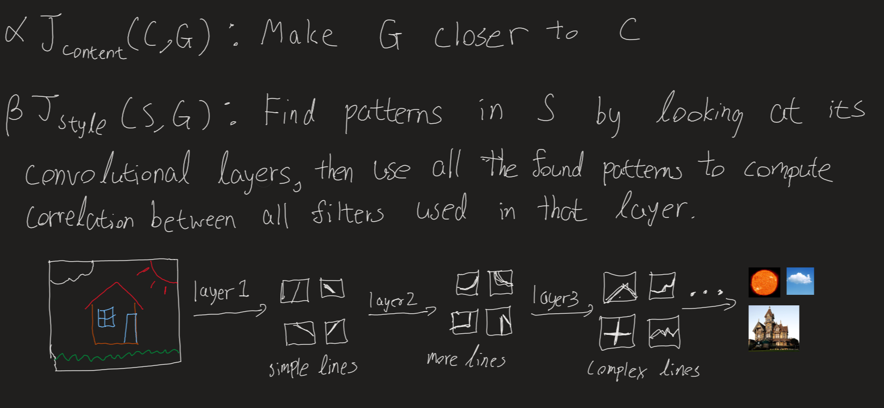
Content Cost Function \(J_{content}(C,G)\)
\[J_{content}(C,G) = \frac{1}{4 \times n_H \times n_W \times n_C}\sum _{ \text{all entries}} (a^{(C)} - a^{(G)})^2\tag{1} \]
- Here, \(a\) stands for activation of the lth layer in our convNet.
- \(n_H\), \(n_W\), \(n_C\) is the dimension of the layer. (Height, width, depth).
- The constants in front are just for normalization.
Style Cost Function \(J_{style}(S,G)\)
\[J_{style}^{[l]}(S,G) = \frac{1}{4 \times {n_C}^2 \times (n_H \times n_W)^2} \sum _{i=1}^{n_C}\sum_{j=1}^{n_C}(G^{(S)}_{(gram)i,j} - G^{(G)}_{(gram)i,j})^2\tag{2} \]
- The constants in front are just for normalization
- The gram is a function that just calculates the correlation between horizontal vectors in the given matrix(which is our depths)
- We will calculate gram of activation layer from both content and generated layer for all combinations of depths(i,j).
- And this is just one layer. Then we compute for all layers. This is why it takes so long to generate our image.
- Note that the picture below ‘unrolled’ a 3d volume into 2d matrix. 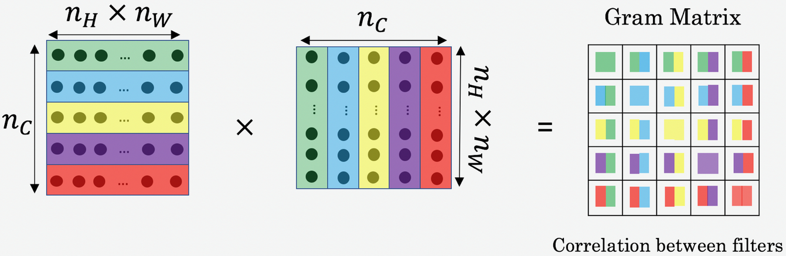
- As you can see style cost function is less straightforward. “If you don’t understand it, don’t worry about it” - Andrew NG.
Code
Cred to Tensorflow (see reference) Note that most of the arts generated above were using code from a coursera assignment which is different from codes below showing implementation (same but different transferred model) in tensorflow2. Modified to run on gpu.
# hide
def imshow(image, title=None):
if len(image.shape) > 3:
image = tf.squeeze(image, axis=0)
plt.imshow(image)
if title:
plt.title(title)# hide
def load_img(path_to_img):
max_dim = 512
img = tf.io.read_file(path_to_img)
img = tf.image.decode_image(img, channels=3)
img = tf.image.convert_image_dtype(img, tf.float32)
shape = tf.cast(tf.shape(img)[:-1], tf.float32)
long_dim = max(shape)
scale = max_dim / long_dim
new_shape = tf.cast(shape * scale, tf.int32)
img = tf.image.resize(img, new_shape)
img = img[tf.newaxis, :]
return imgcontent_image = load_img('images/newby.jpg')
style_image = load_img('images/kandinsky.jpg')
plt.subplot(1, 2, 1)
imshow(content_image, 'Content Image')
plt.subplot(1, 2, 2)
imshow(style_image, 'Style Image')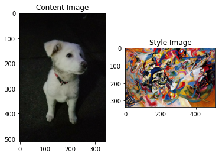
def tensor_to_image(tensor):
tensor = tensor*255
tensor = np.array(tensor, dtype=np.uint8)
if np.ndim(tensor)>3:
assert tensor.shape[0] == 1
tensor = tensor[0]
return PIL.Image.fromarray(tensor)Transfer Learning
Choice for the model is VGG19 since it is what was used in the original paper by Leon A. Gatys, Alexander S. Ecker, Matthias Bethge.
content_layers = ['block5_conv2']
style_layers = ['block1_conv1',
'block2_conv1',
'block3_conv1',
'block4_conv1',
'block5_conv1']
num_content_layers = len(content_layers)
num_style_layers = len(style_layers)def vgg_layers(layer_names):
""" Creates a vgg model that returns a list of intermediate output values."""
# Load our model. Load pretrained VGG, trained on imagenet data
vgg = tf.keras.applications.VGG19(include_top=False, weights='imagenet')
vgg.trainable = False
outputs = [vgg.get_layer(name).output for name in layer_names]
model = tf.keras.Model([vgg.input], outputs)
return modelstyle_extractor = vgg_layers(style_layers)
style_outputs = style_extractor(style_image*255)
#Look at the statistics of each layer's output
# for name, output in zip(style_layers, style_outputs):
# print(name)
# print(" shape: ", output.numpy().shape)
# print(" min: ", output.numpy().min())
# print(" max: ", output.numpy().max())
# print(" mean: ", output.numpy().mean())
# print()Helper functions
def gram_matrix(input_tensor):
result = tf.linalg.einsum('bijc,bijd->bcd', input_tensor, input_tensor)
input_shape = tf.shape(input_tensor)
num_locations = tf.cast(input_shape[1]*input_shape[2], tf.float32)
return result/(num_locations)class StyleContentModel(tf.keras.models.Model):
def __init__(self, style_layers, content_layers):
super(StyleContentModel, self).__init__()
self.vgg = vgg_layers(style_layers + content_layers)
self.style_layers = style_layers
self.content_layers = content_layers
self.num_style_layers = len(style_layers)
self.vgg.trainable = False
def call(self, inputs):
"Expects float input in [0,1]"
inputs = inputs*255.0
preprocessed_input = tf.keras.applications.vgg19.preprocess_input(inputs)
outputs = self.vgg(preprocessed_input)
style_outputs, content_outputs = (outputs[:self.num_style_layers],
outputs[self.num_style_layers:])
style_outputs = [gram_matrix(style_output)
for style_output in style_outputs]
content_dict = {content_name:value
for content_name, value
in zip(self.content_layers, content_outputs)}
style_dict = {style_name:value
for style_name, value
in zip(self.style_layers, style_outputs)}
return {'content':content_dict, 'style':style_dict}extractor = StyleContentModel(style_layers, content_layers)
results = extractor(tf.constant(content_image))
# print('Styles:')
# for name, output in sorted(results['style'].items()):
# print(" ", name)
# print(" shape: ", output.numpy().shape)
# print(" min: ", output.numpy().min())
# print(" max: ", output.numpy().max())
# print(" mean: ", output.numpy().mean())
# print()
# print("Contents:")
# for name, output in sorted(results['content'].items()):
# print(" ", name)
# print(" shape: ", output.numpy().shape)
# print(" min: ", output.numpy().min())
# print(" max: ", output.numpy().max())
# print(" mean: ", output.numpy().mean())style_targets = extractor(style_image)['style']
content_targets = extractor(content_image)['content']image = tf.Variable(content_image)def clip_0_1(image):
return tf.clip_by_value(image, clip_value_min=0.0, clip_value_max=1.0)opt = tf.optimizers.Adam(learning_rate=0.02, beta_1=0.99, epsilon=1e-1)style_weight=1e-2
content_weight=1e4def style_content_loss(outputs):
style_outputs = outputs['style']
content_outputs = outputs['content']
style_loss = tf.add_n([tf.reduce_mean((style_outputs[name]-style_targets[name])**2)
for name in style_outputs.keys()])
style_loss *= style_weight / num_style_layers
content_loss = tf.add_n([tf.reduce_mean((content_outputs[name]-content_targets[name])**2)
for name in content_outputs.keys()])
content_loss *= content_weight / num_content_layers
loss = style_loss + content_loss
return loss@tf.function()
def train_step(image):
with tf.GradientTape() as tape:
outputs = extractor(image)
loss = style_content_loss(outputs)
grad = tape.gradient(loss, image)
opt.apply_gradients([(grad, image)])
image.assign(clip_0_1(image))Training
train_step(image)
train_step(image)
train_step(image)
tensor_to_image(image)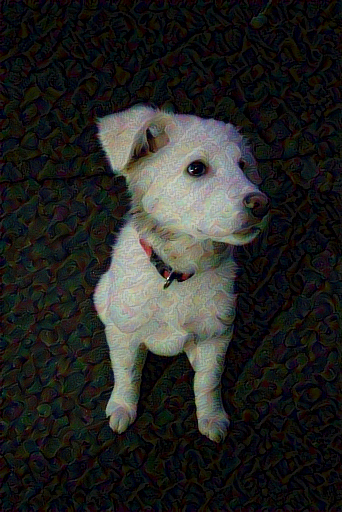
Do 1000 iteration and save every 200th iteration image
import time
with tf.device("/gpu:0"):
start = time.time()
epochs = 10
steps_per_epoch = 100
step = 0
for n in range(epochs):
for m in range(steps_per_epoch):
step += 1
train_step(image)
print(".", end='')
display.clear_output(wait=True)
display.display(tensor_to_image(image))
print("Train step: {}".format(step))
# save current generated image in the "/output" directory
imageio.imwrite("output/" + str(2*100) + ".png", tensor_to_image(image))
end = time.time()
print("Total time: {:.1f}".format(end-start))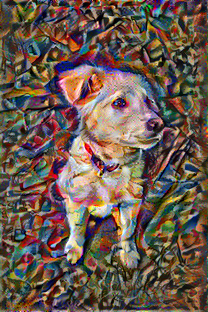
Train step: 1000
Total time: 634.3# save_image("output/" + str(2*100) + ".png", tensor_to_image(image))
imageio.imwrite("output/" + str(2*100) + ".png", tensor_to_image(image))Total Variation Loss
I didn’t learn this part so its like magic to me
def high_pass_x_y(image):
x_var = image[:,:,1:,:] - image[:,:,:-1,:]
y_var = image[:,1:,:,:] - image[:,:-1,:,:]
return x_var, y_varx_deltas, y_deltas = high_pass_x_y(content_image)
plt.figure(figsize=(14,10))
plt.subplot(2,2,1)
imshow(clip_0_1(2*y_deltas+0.5), "Horizontal Deltas Original")
plt.subplot(2,2,2)
imshow(clip_0_1(2*x_deltas+0.5), "Vertical Deltas Original")
x_deltas, y_deltas = high_pass_x_y(image)
plt.subplot(2,2,3)
imshow(clip_0_1(2*y_deltas+0.5), "Horizontal Deltas Styled")
plt.subplot(2,2,4)
imshow(clip_0_1(2*x_deltas+0.5), "Vertical Deltas Styled")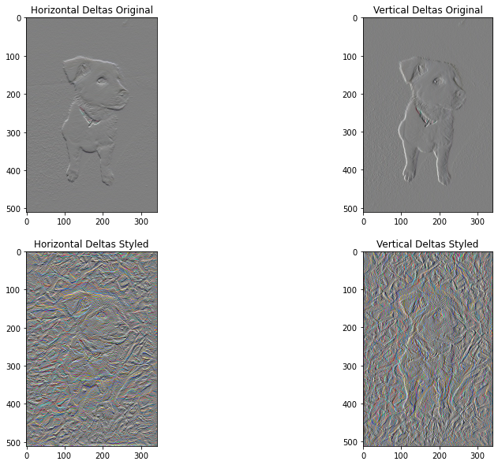
plt.figure(figsize=(14,10))
sobel = tf.image.sobel_edges(content_image)
plt.subplot(1,2,1)
imshow(clip_0_1(sobel[...,0]/4+0.5), "Horizontal Sobel-edges")
plt.subplot(1,2,2)
imshow(clip_0_1(sobel[...,1]/4+0.5), "Vertical Sobel-edges")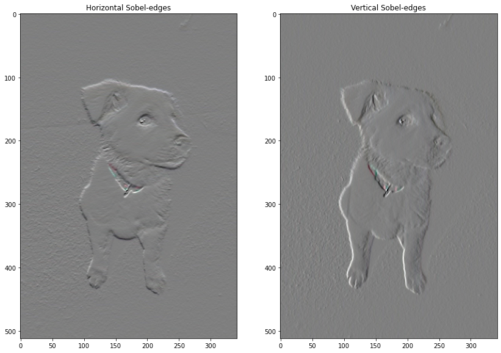
def total_variation_loss(image):
x_deltas, y_deltas = high_pass_x_y(image)
return tf.reduce_sum(tf.abs(x_deltas)) + tf.reduce_sum(tf.abs(y_deltas))tf.image.total_variation(image).numpy()array([114173.52], dtype=float32)total_variation_weight=30@tf.function()
def train_step(image):
with tf.GradientTape() as tape:
outputs = extractor(image)
loss = style_content_loss(outputs)
loss += total_variation_weight*tf.image.total_variation(image)
grad = tape.gradient(loss, image)
opt.apply_gradients([(grad, image)])
image.assign(clip_0_1(image))image = tf.Variable(content_image)import time
with tf.device("/gpu:0"):
start = time.time()
epochs = 10
steps_per_epoch = 100
step = 0
for n in range(epochs):
for m in range(steps_per_epoch):
step += 1
train_step(image)
print(".", end='')
display.clear_output(wait=True)
display.display(tensor_to_image(image))
print("Train step: {}".format(step))
end = time.time()
print("Total time: {:.1f}".format(end-start))Train step: 1000
Total time: 834.3file_name = 'generated_image.png'
imageio.imwrite("output/" + 'generated_image' + ".png", tensor_to_image(image))References:
The Neural Style Transfer algorithm was due to Gatys et al. (2015). The pre-trained network used in this implementation is a VGG network, which is due to Simonyan and Zisserman (2015). The whole code is basically from tensorflow website listed below with little changes(to save images and use gpu)
- Leon A. Gatys, Alexander S. Ecker, Matthias Bethge, (2015). A Neural Algorithm of Artistic Style
- Harish Narayanan, Convolutional neural networks for artistic style transfer.
- DeepLearningAi(Coursera) (2020). Deep Learning Specialization
- TensorFlow (2019). Neural style transfer